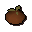

Fadli
| Config name | duel_fadli |
| NPC id | 958 |
| Combat level | hidden |
| Options | Talk-to, Bank, Buy |
| Wander range | 2 tiles from spawn |
| Defined in | scripts/minigames/game_duelarena/configs/duelarena.npc |
Fadli
Looks kinda bored.
Show all 1 spawn on the world map → Open in knowledge graph →
Locations
| Area | Coordinates | Level | Count | Map |
|---|---|---|---|---|
| Duel Arena | 3383, 3269 | 0 | 1 | view |
Shop
Runs Shop of Distaste.
| Item | Stock | Value | Sells for |
|---|---|---|---|
 Rotten tomato | 2000 | 1 gp | 1 gp |
Shop sells at 100.0% of item value and buys at 55.0%.
Dialogue
PlayerHi.
FadliWhat?
PlayerWhat do you do?
FadliYou can store your stuff here if you want. You can dump anything you don't want to carry whilst you're fighting duels and then pick it up again on the way out.
FadliTo be honest I'm wasted here.
FadliI should be winning duels in the arena! I'm the best warrior in Al Kharid!
PlayerEasy, tiger!
PlayerWhat is this place?
FadliIsn't it obvious?
FadliThis is the Duel Arena...duh!
PlayerI'd like to access my bank, please.
FadliSure.
PlayerDo you watch any matches?
FadliWhen I can.
FadliMost aren't any good so I throw rotten fruit at them!
PlayerHeh. Can I buy some?
FadliSure.
Referenced in scripts
scripts/minigames/game_duelarena/scripts/fadli.rs2